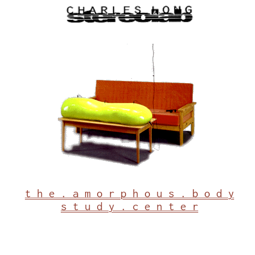
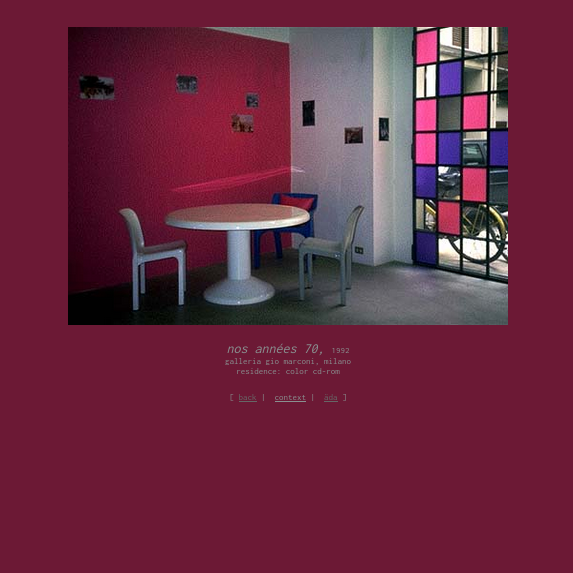
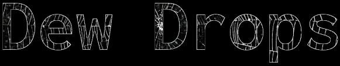

A study of the squish, carried out by Charles Long, 1994.

A selection of rooms, curated by Dominique Gonzalez, 1994.

I’ve developed a recent fascination with the äda 'web project. It was essentially a financial agreement between entrepreneur John Borthwick and curator Benjamin Weil, where Borthwick would provide the capital and Weil would find talent to commission works for the project which would take the form of a website. Each work would link to others in the project. Like most net.art projects there’s a heartwarming level of early internet naivety. The project’s funding dried up in late 1998. The final state of the project has been archived by the Walker Art Center ever since. The structure of the project perfectly emulates a pre search engine internet. The experience of exploring it forces you to recognize what is largely suppressed by modern web design, the web is a web. I’ve gathered a few of my favorite corners of äda to give a small introduction to what lies within. Below is a button which will serve you a random page from äda, which I think is probably the best way to experience it.